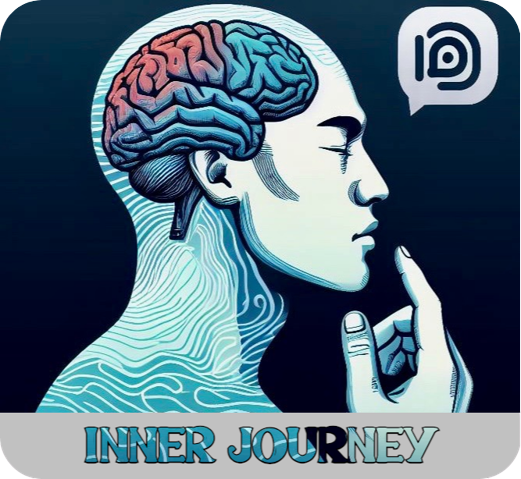
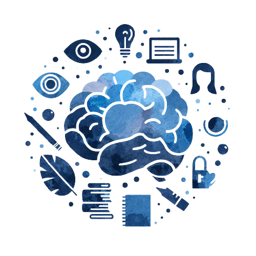

<div class="home-container container-fluid mt-3">
  <div class="row">
    <div class="col-12">
      <div class="d-flex justify-content-between mb-2">
        <div class="d-flex">
          
          <p class="logo-name">Inner Yourney</p>
        </div>
        <button class="btn btn-primary button" [routerLink]='["/login"]'>Sign In</button>
      </div>
    </div>
    <div class="content-container">
      <h2 class="content-text first text-center">
        The path to <span class="type"></span>begins with one step inward.
      </h2>
      <h2 class="content-text text-center">Start your Inner Journey today.</h2>
      <div class="text-center mt-5">
        <button class="btn btn-primary button" [routerLink]='["/login"]'>Try</button>
      </div>
    </div>
    <div class="accordion d-flex align-items-center pt-5 pb-5">
      <p-accordion [activeIndex]="0">
        <p-accordionTab header="Mental Health Tracking">
          <p>
            Users can track their emotions and mood daily using a journal,
            helping to identify patterns and potential areas for improvement.
          </p>
        </p-accordionTab>
        <p-accordionTab header="Online Chat">
          <p>
            Access to online support, where users can ask questions, receive
            advice, and engage in conversations about their mental health.
          </p>
        </p-accordionTab>
        <p-accordionTab header="Motivational Quotes and Articles">
          <p>
            Daily access to inspiring quotes and articles on topics related to
            psychology, personal development, and well-being.
          </p>
        </p-accordionTab>
        <p-accordionTab header="Self-Help Tools">
          <p>
            Interactive tools and exercises that assist users in managing
            emotions, reducing stress, and increasing self-awareness.
          </p>
        </p-accordionTab>
        <p-accordionTab header="Community and Support">
          <p>
            The ability to join a user community, share experiences, provide
            support to others, and participate in events and support groups.
          </p>
        </p-accordionTab>
        <p-accordionTab header="Statistics and Progress">
          <p>
            Displaying user statistics and progress in mental health management,
            aiding in tracking and motivating continued self-improvement.
          </p>
        </p-accordionTab>
        <p-accordionTab header="Quick Start and User-Friendly">
          <p>
            The app is intuitive and easy to use, enabling users to start using
            its features quickly.
          </p>
        </p-accordionTab>
        <p-accordionTab header="Multi-Platform Access">
          <p>
            "InnerJourney" is available on various platforms, including
            smartphones, tablets, and computers, allowing users to access it
            from any device.
          </p>
        </p-accordionTab>
        <p-accordionTab header="Privacy and Security">
          <p>
            Assuring users that their data is secure and private, in compliance
            with the app's privacy policy.
          </p>
        </p-accordionTab>
        <p-accordionTab header="24/7 Support">
          <p>
            Users can utilize the app and access online support at any time,
            24/7.
          </p>
        </p-accordionTab>
      </p-accordion>
    </div>
    <div class="content-container-bottom text-center">
      
      <h2 class="content-text-bottom mt-4 mb-4">
        Transform Your Mental Health with Inner Yourney
      </h2>
      <div class="mb-5">
        <button class="btn btn-primary button" [routerLink]='["/login"]'>Try</button>
      </div>
    </div>
    <div class="benefits-grid">
      <h2 class="text-title text-center mt-4 mb-5">
        Unlock the Potential
        <br />
        of Your Inner World!
      </h2>
      <mat-grid-list cols="4" rowHeight="2:1">
        <mat-grid-tile colspan="2" rowspan="2">
          <span class="title">Improved Mental Health</span>
          <span class="detail">
            The app helps users track their emotions, identify stressors, and
            work on improving their mental health.
          </span>
        </mat-grid-tile>
        <mat-grid-tile rowspan="2">
          <span class="title">Online Support</span>
          <span class="detail">
            Access to an online support provides users with a place to express
            their feelings, receive support, and access expert advice.
          </span>
        </mat-grid-tile>
        <mat-grid-tile rowspan="2">
          <span class="title">Increased Self-Awareness</span>
          <span class="detail">
            The emotion journal and self-help tools help users better understand
            themselves, leading to greater self-awareness.
          </span>
        </mat-grid-tile>
        <mat-grid-tile colspan="4">
          <span class="title">Motivation and Inspiration</span>
          <span class="detail">
            Daily motivational quotes and articles provide inspiration and help
            users maintain a positive outlook.
          </span>
        </mat-grid-tile>
        <mat-grid-tile>
          <span class="title">Stress Management</span>
          <span class="detail">
            The app provides tools and techniques to help users cope with
            stress, increasing resilience.
          </span>
        </mat-grid-tile>
        <mat-grid-tile colspan="2">
          <span class="title">Community Support</span>
          <span class="detail">
            The ability to join a user community where users can share
            experiences and get support from others facing similar challenges.
          </span>
        </mat-grid-tile>
        <mat-grid-tile rowspan="2">
          <span class="title">Building Positive Habits</span>
          <span class="detail">
            The app helps users develop positive habits related to mental
            well-being, which can lead to lasting well-being.
          </span>
        </mat-grid-tile>
        <mat-grid-tile colspan="3" rowspan="2">
          <span class="title">Easy Access and Convenience</span>
          <span class="detail">
            The app is available on multiple platforms, making it convenient and
            accessible whenever users need it.
          </span>
        </mat-grid-tile>
        <mat-grid-tile>
          <span class="title">Practical Tools</span>
          <span class="detail">
            Providing practical tools and exercises that users can apply in
            their daily lives.
          </span>
        </mat-grid-tile>
      </mat-grid-list>
      <div class="text-center mt-5 mb-3">
        <button class="btn btn-primary button" [routerLink]='["/login"]'>Try</button>
      </div>
    </div>
    <div class="content-container-bottom bottom text-center">
      
    </div>
  </div>
</div>
